O sonho de criar uma cafeteria com gatos surgiu da paixão por felinos e do desejo de desmistificar esses animais, muitas vezes alvo de preconceitos e estereótipos. A ideia era mostrar que os gatos, apesar de sua fama de independentes, podem ser companheiros afetuosos e carinhosos. O projeto nasceu para oferecer um espaço onde as pessoas pudessem conviver com esses animais de forma tranquila e acolhedora.
Respeito e cuidado pelos animais, promovendo o bem-estar dos gatos e a conscientização sobre sua verdadeira natureza. Além disso, buscamos oferecer um ambiente acolhedor e inclusivo para todos os clientes, com alimentos de qualidade.
Oferecer uma experiência única, unindo café de qualidade, um ambiente acolhedor e o bem-estar dos gatos, promovendo a conscientização sobre esses animais. Criar um espaço onde todos possam desfrutar de momentos de prazer.
Nos tornar uma cafeteria acolhedora e de referência, oferecendo um ambiente único onde qualidade e convivência se unem. Buscamos proporcionar uma experiência completa, com alimentos frescos e um espaço que a conexão entre pessoas e animais.
 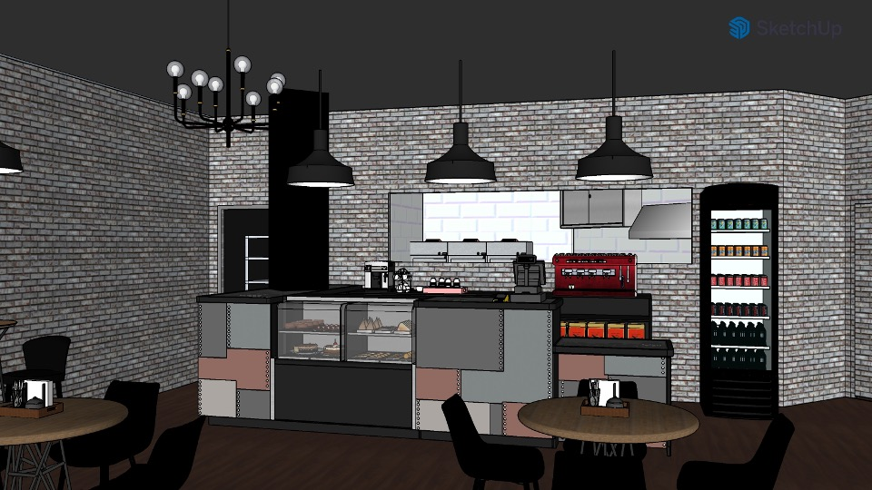
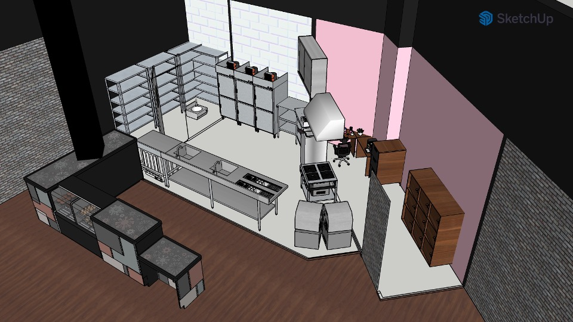
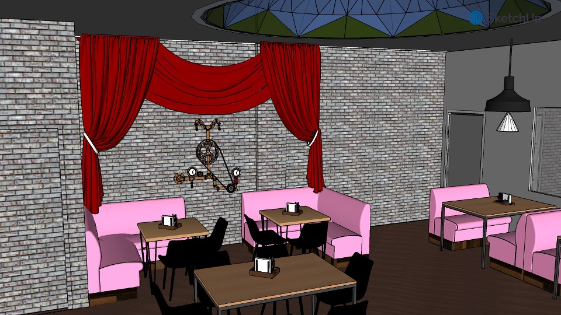
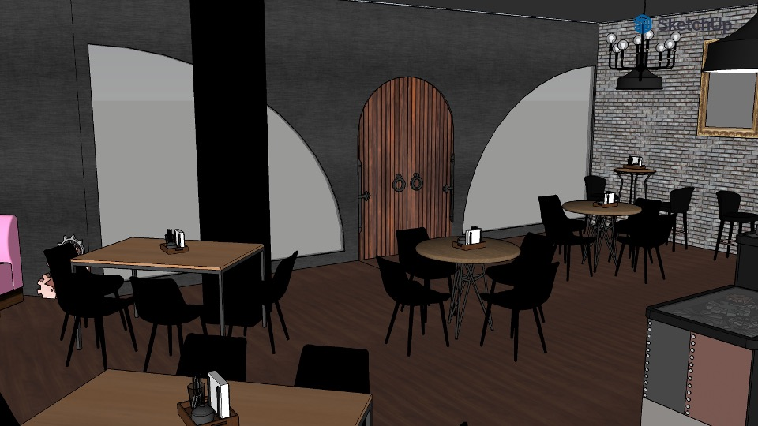
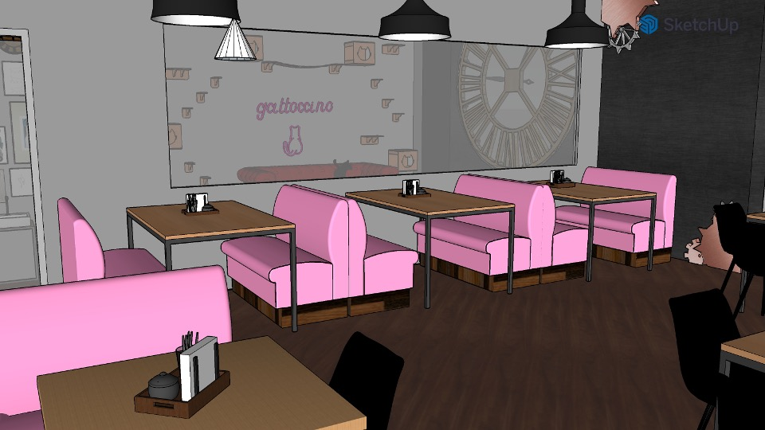
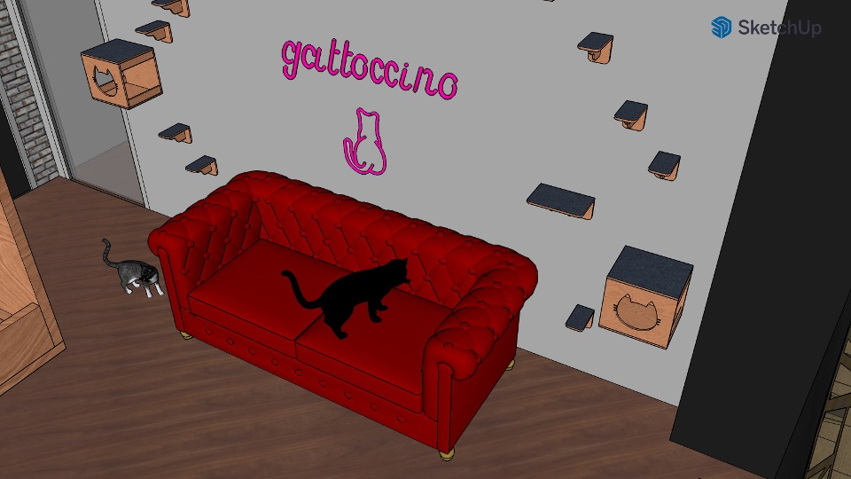
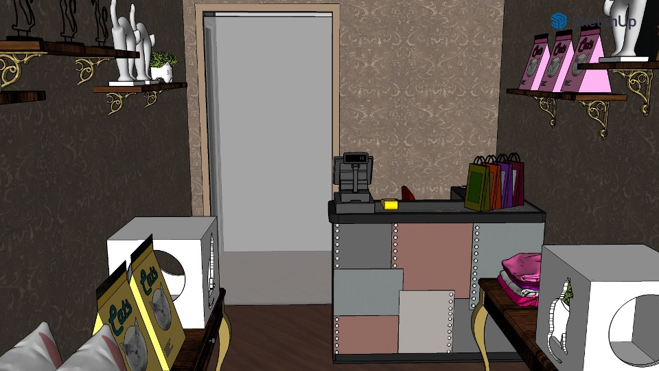
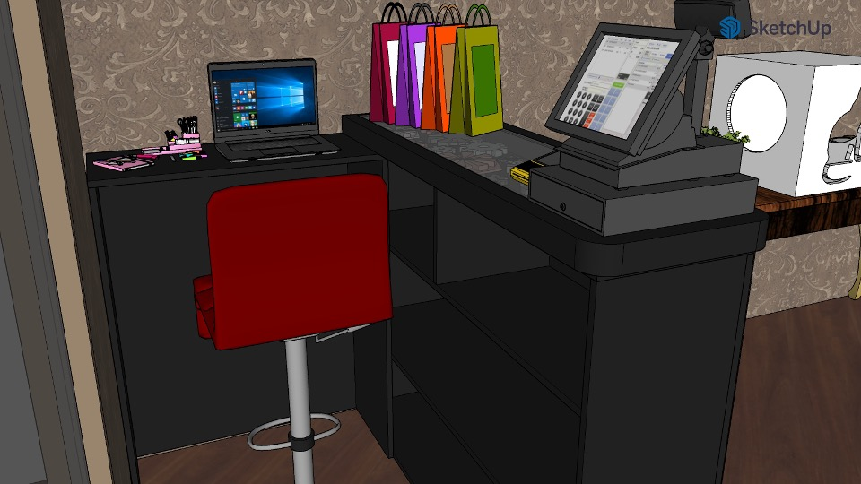
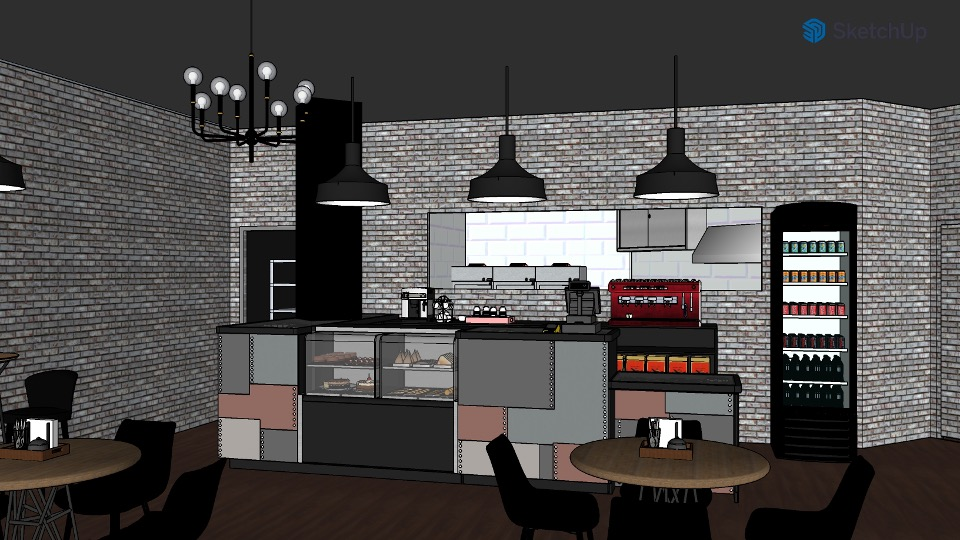
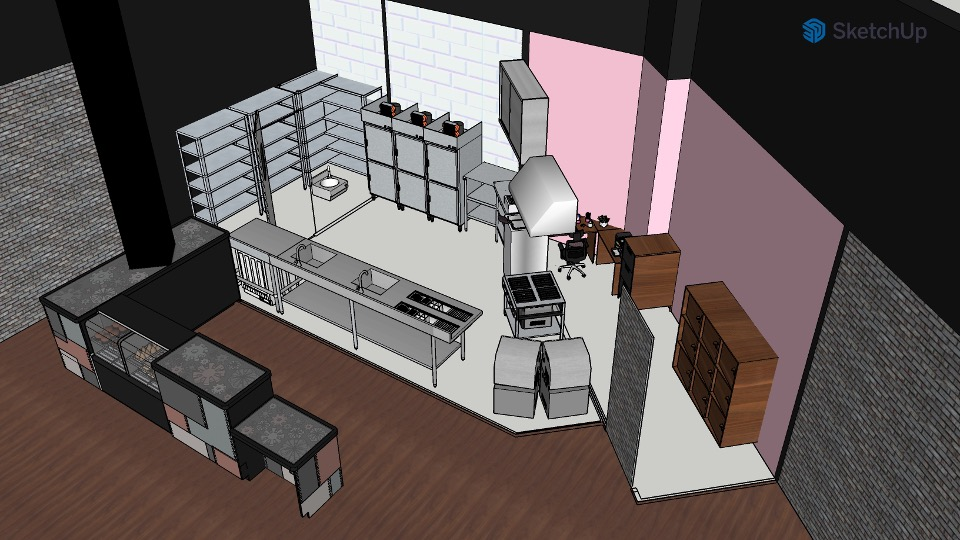
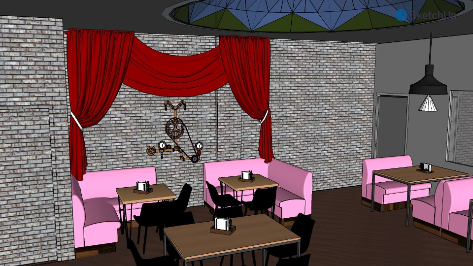
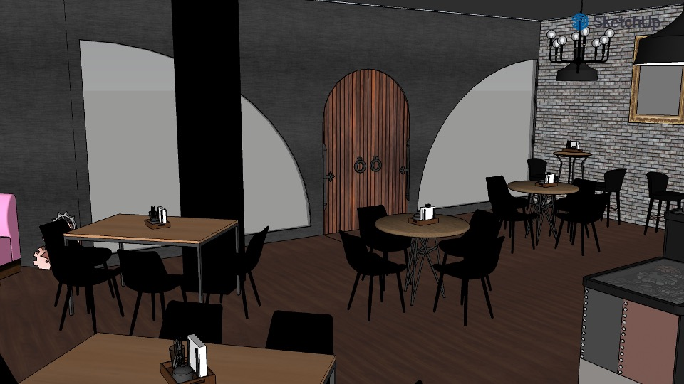
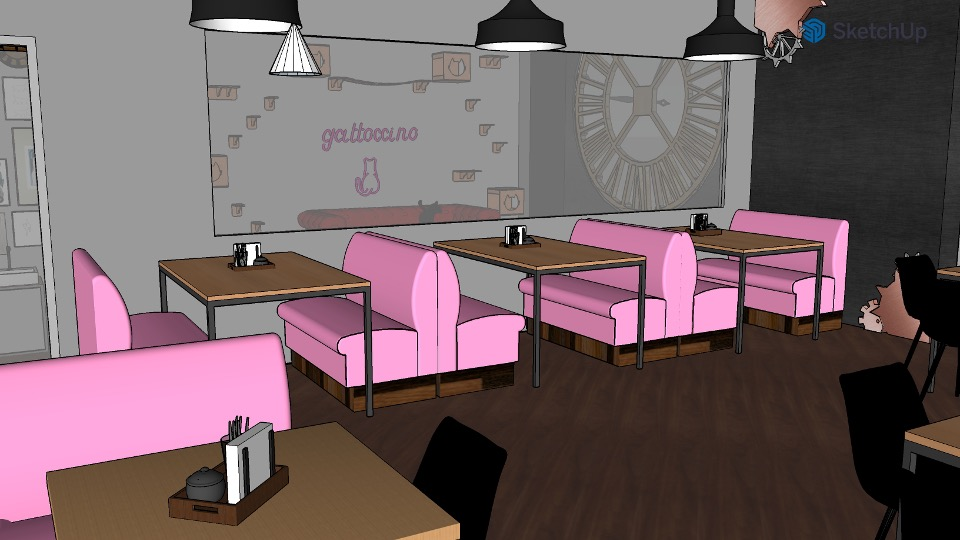
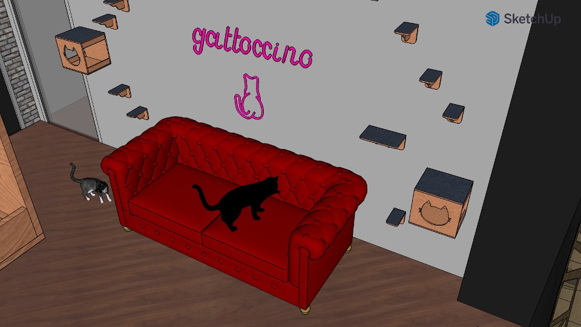
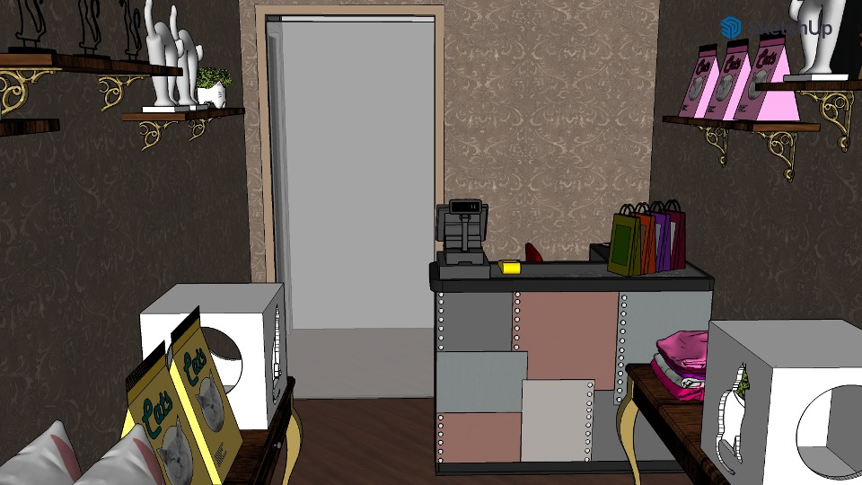
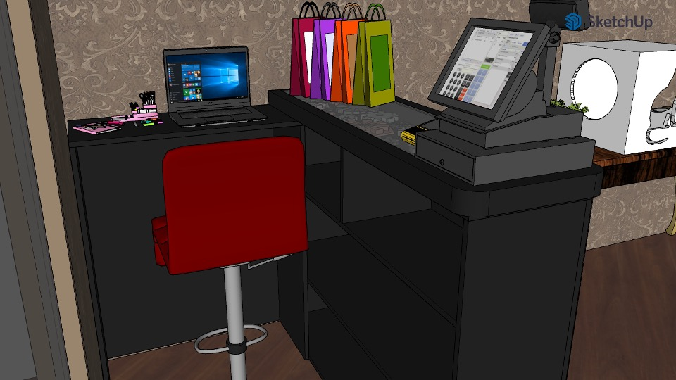
© 2024 GattoCcino | Desenvolvido por: Thamiris Herrera Lima